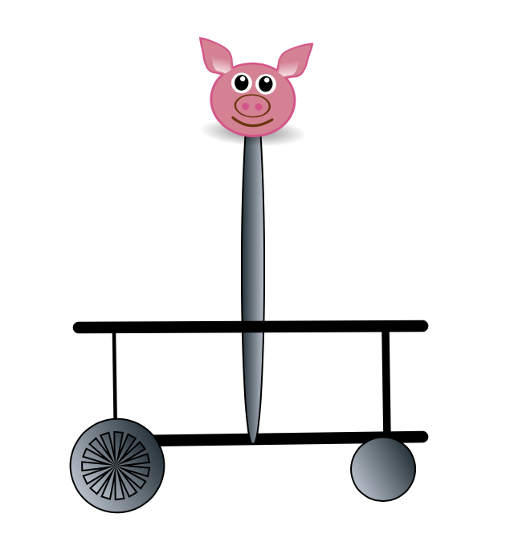
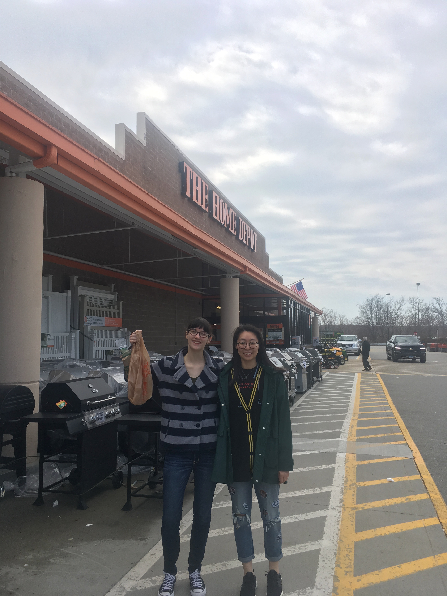
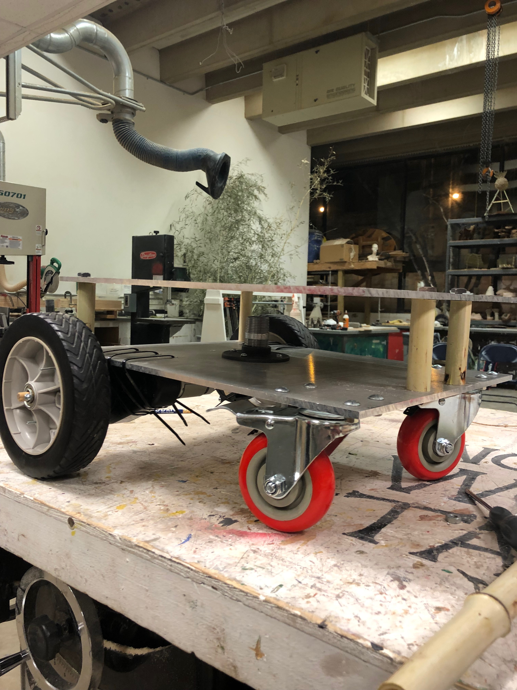
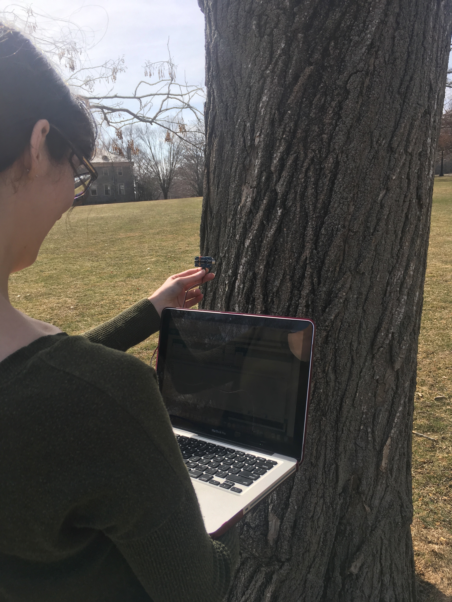

Updates Timeline
Presentation (3/2/2019)
Our team of developers is working very hard in the contruction of CoCoBot. We had some issues with the delivery of the materials for the robot, but we have started
working intensively in the motor control of the two front weels of the robot.
Our team of developers show great promise in the construction of this robot. With the necessary materials, and more
work, we will bring this robot to the top.

Building The Robot (3/4/2019)
Our team of robot developers went of a field trip to Home Depot in the search for materials to finish the robot body, including a base for the middle pole and cable ties. After acquiring all the necessary materials
they did some independent work in the alluminium plates, giving life to CoCoGo. The plates were linked together by placing banboo pieces in between the plates and
allumnium poles.


Motor Controllers and Sensors Implementation (3/25/2019)
The previosly developed motor controller system with two Parallax motor controlers, controlled by an arduino, and the two DC motors was tranfered to the body of the
robot. After successful implementation of the motor system, 4 PING sensors were added to each side of the robot, allowing CoCoGo to aquiry sensory data from the
environment. Right now the robot developers have been working on a production system to guide the robot on its task to give awesome tours of Connecticut
College.

3.5 LED touche screen for raspberry pi (4/1/2019)
We attempted installing a 3.5 inch screen in the raspberry pie, but after hours working on it we still could not get it to work. We were initially botting the pi with a USB
and the same procedure found at TrickIKnow using a sd card to reboot the raspberry pi worked. The robot experts finally got the
screen to work.

AudioVisual (4/7/2019)
Our team of robot developers started experimenting with a Raspberry pi for the audio visual part of the robot. We designed a Bitmoji on an iPhone 10 and used the new face regonition system to create videos for the tour. After that, we experimented with different python code and media players, and we could play a video from python in the screen. The video was not accesible in the 3.5 LED touch screen implemented in the Raspberry pi, but the screen was still very useful for tests outside.
GPS (4/14/2019)
We decided to use a GPS sensor to identify the buldings on campus and both play the video and stop the robot navigation. We purchased a GPS sensor from Adafruit and tested it in the raspberry pie. After sucefully aquiring latitude and longitude data from the sensor, we used the sensor to map the tour track with latidude points. We later had to move the GPS sensor to the Arduino due to communication issues in between the raspberry pie and the arduino.
Communication in Between Raspberry pie and Arduino (4/25/2019)
We